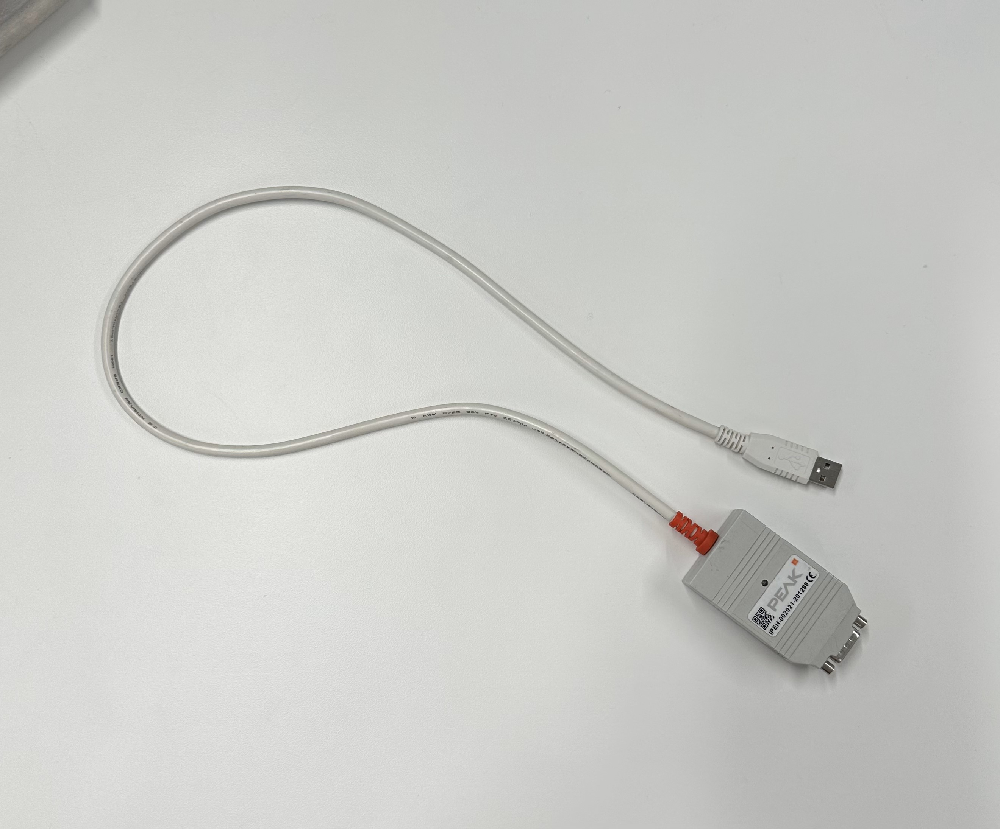
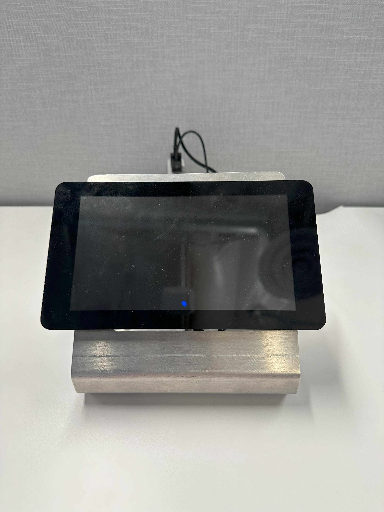
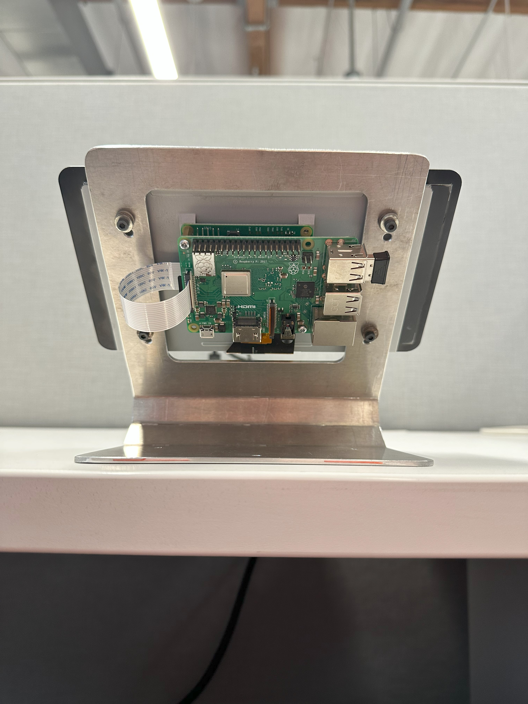
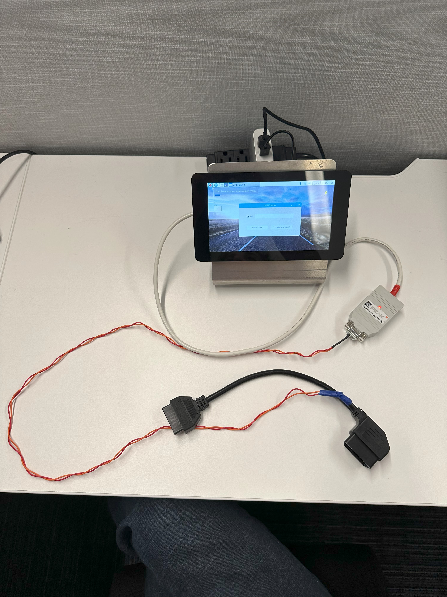

A Raspberry-Pi-powered touchscreen flashing rig built for Karma Automotive's commercial vehicle program — replacing a slow, expensive setup with a handheld unit the technicians actually enjoyed using.
A self-contained VIN-flasher prototype intended to let Karma technicians write VINs into freshly electrified vehicles without the existing multi-thousand-dollar rig. The prototype consisted of a tablet touchscreen bolted to a Raspberry Pi, a CAN bus reader wired to the vehicle's OBD2 port, and a full Python + Tkinter application stack.
The prototype dramatically reduced flashing time per vehicle and cut the required hardware cost by an order of magnitude — while giving the operator a drastically simpler interface than the tools it replaced.
Left → right: CAN bus reader wired to an OBD2 port, the touch tablet, the back of the tablet with the Raspberry Pi mounted, and the full physical assembly.



